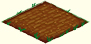
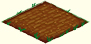

，即可在庄园中开垦田地；
，即可在庄园中开垦田地；2.一开始，你可以开垦数十块的田地；扩充庄园后，可开垦的数量更多；
3.在商店
 购买种子后，点击庄园中的田地，即可播种；
购买种子后，点击庄园中的田地，即可播种；4.别忘了收获自己的劳动所得哦，枯萎后就颗粒无收了！
5.使用铲子删除庄园里的田地和植物；
6.到达一定级别，可利用拖拉机、播种机 、收割机 ，方便快捷的劳作。

1.点击耙子，即可在庄园中开垦田地；
2.一开始，你可以开垦数十块的田地；扩充庄园后，可开垦的数量更多；
3.在商店购买种子后，点击庄园中的田地，即可播种；
4.别忘了收获自己的劳动所得哦，枯萎后就颗粒无收了！
5.使用铲子删除庄园里的田地和植物；
6.到达一定级别，可利用拖拉机、播种机 、收割机 ，方便快捷的劳作。
1.商店中购买果树后，点击庄园空地，即可种植；
2.果树结满果实时，一定要记得及时收获哦；
3.幸运的是，果树不会枯萎，收获后的果树，过一段时间后，还会继续结果。
1.点击商店，选择想要饲养的动物后，点击庄园空地，即可饲养动物；
2.动物成熟之后一定要记得收获 哦~
哦~
3.将动物放入相应的居所后，可以更方便地收获；幸运的话，说不定会有意外的惊喜收获呢！
4.除了商店购买外，还有各种神秘途径可获得动物哦！
1.点击左上角的庄园名称，为自己的庄园起个响当当的名字；
2.在商店 里购买各种喜欢的建筑和装饰，随心所欲进行装饰；
3.向好友们许愿或发布需求 ，让好友们赠送自己心仪的东西。
，让好友们赠送自己心仪的东西。